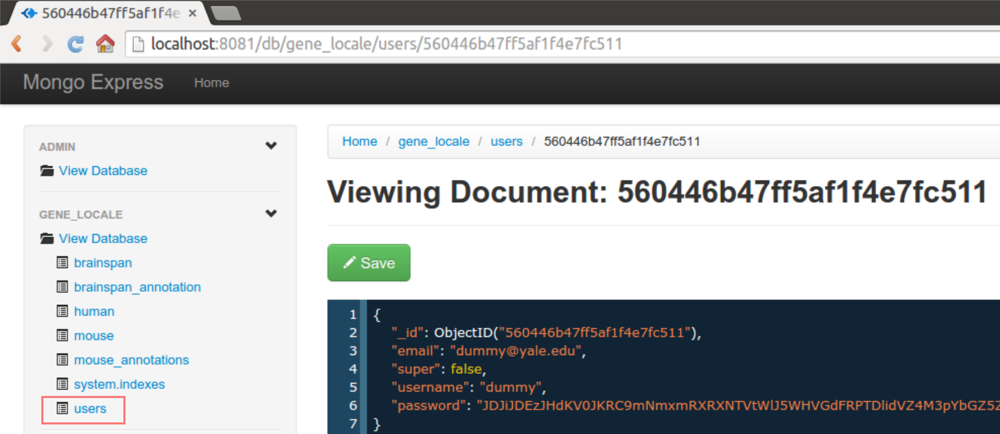

Users
Registering
When a user registers from the provided login page, their credentials are added to the database, but they don't get privileges to the private data. That has to be added manually through the mongo shell or the mongo-express interface.
To give a user privileges, either
- run the commands inside the mongo shell
> use gene_locale
> db.users.update({username: {USERNAME}}, {$set: {super: true}})
-
Manually edit the user's entry from mongo-express 

Database Update
It is strongly recommended to have thorough backups of the existing database before messing with anything. These scripts are potentially destructive and leave no way to recover the previous contents.
Updating Mouse Expression
Update the processed celltype data by running the update_processed script
and passing the location of the data-file containing the information. The file
must be set up as indicated below, and be a proper tab-seperated file
using \t as the delimiter and \n as newline.
Note: the column order doesn't matter, just the column headings. Any extraneous columns will be ignored. The trailing number denotes the sample number when sets come from the same celltype and brain region.
| celltype1:region1:1 | celltype1:region1:2 | celltype2:region:1 | |
|---|---|---|---|
| ENSMUSG00000000001.4 | 1.5773738 | 55.4939338 | 3383.5585858 |
Comman to upload the data:
/usr/local/bin/update_mouse_expression PATH/TO/FILE
This command will drop the existing table and upload the data from file. Make sure to have a backup on hand.
Updating Mouse Annotations
Update the mouse annotations collection by running the update_annotations script
and passing the location of the csv file containing the information. The file
must be set up as indicated below, and be a proper csv file
using , as the delimiter and \n as the newline.
Note: the column order doesn't matter, just the column headings. Any extraneous columns will be ignored.
| protected | method | level1 | level2 | level3_celltype | level4 | sampleID |
|---|---|---|---|---|---|---|
| public OR private | level1 name | level2 group name | level3 celltype | level4 celltype | level1:brain_region | |
| private | TRAP | Stard8_neuron | midbrain | neuron | neuron | neuron |
Comman to upload the data
/usr/local/bin/update_annotations PATH/TO/FILE.csv
This command will drop the existing table and upload the data from file. Make sure to have a backup on hand.
Updating Processed Mouse Celltype Expression
Update the processed celltype data by running the update_processed script
and passing the location of the data-file containing the information. The file
must be set up as indicated below, and be a proper tab-seperated file
using \t as the delimiter and \n as newline.
Note: the column order doesn't matter, just the column headings. Any extraneous columns will be ignored.
| Celltype | Expression | Enrichment | GeneID_human | GeneName | GeneID_mouse |
|---|---|---|---|---|---|
| Astrocyte | 36.25311 | 6.53970054 | ENSG000001343 | GRHL1 | ENSMUSG00000020656 |
Comman to upload the data:
/usr/local/bin/update_processed PATH/TO/FILE
This command will not drop the existing table, but still make sure to have a backup on hand.